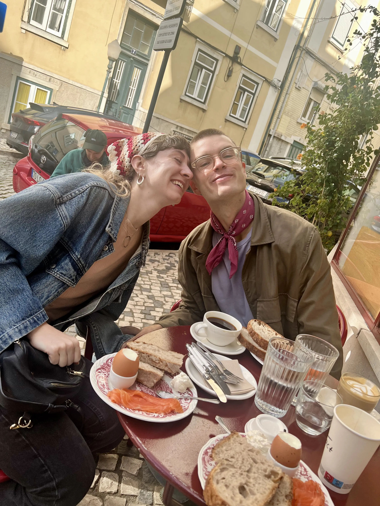
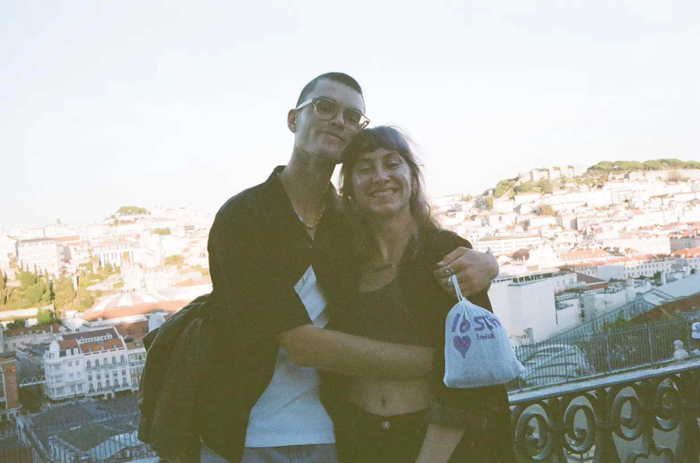
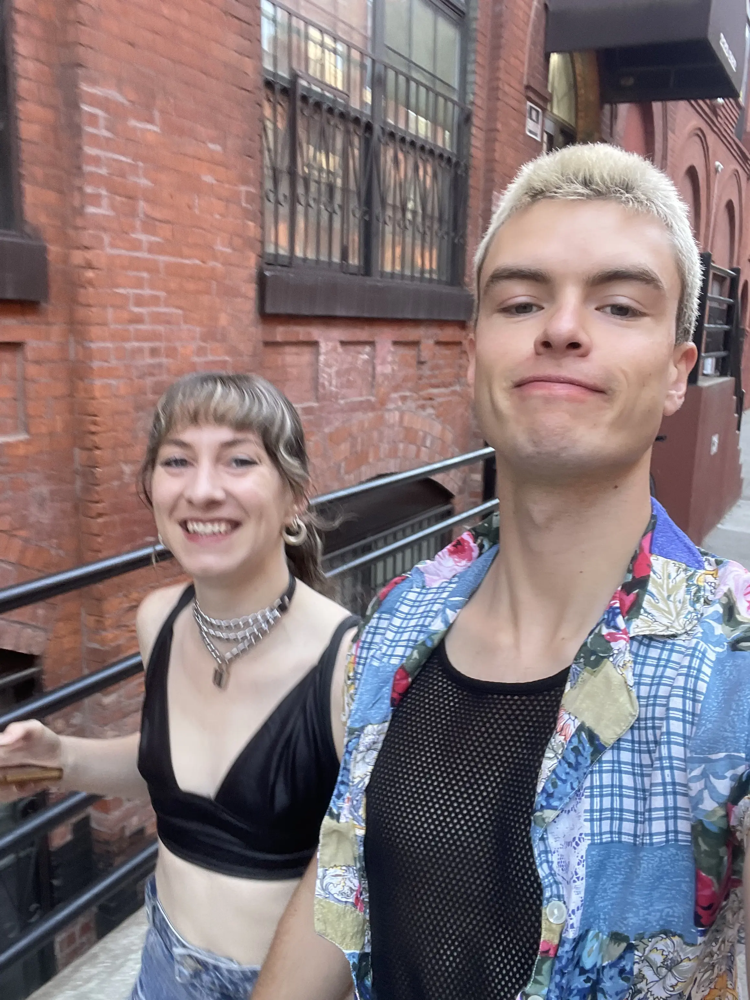
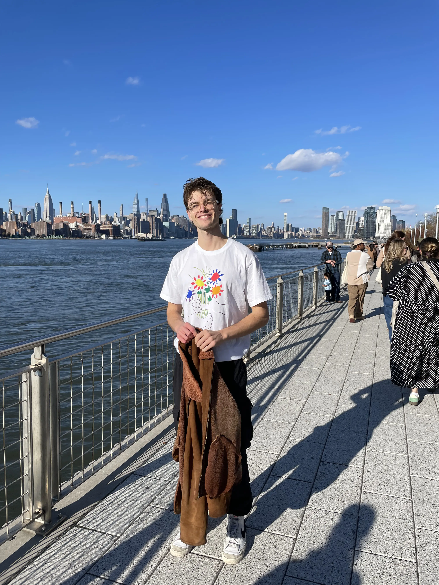
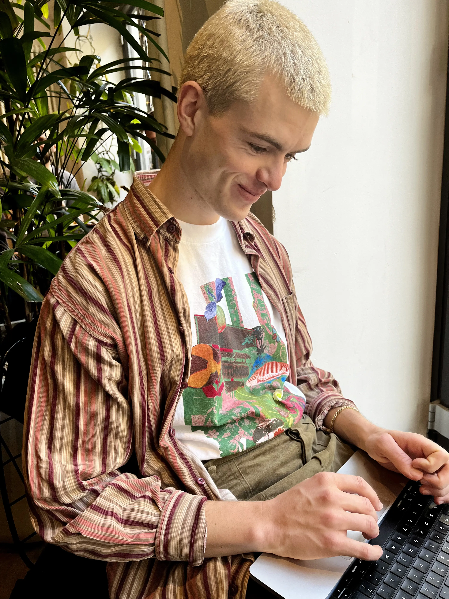
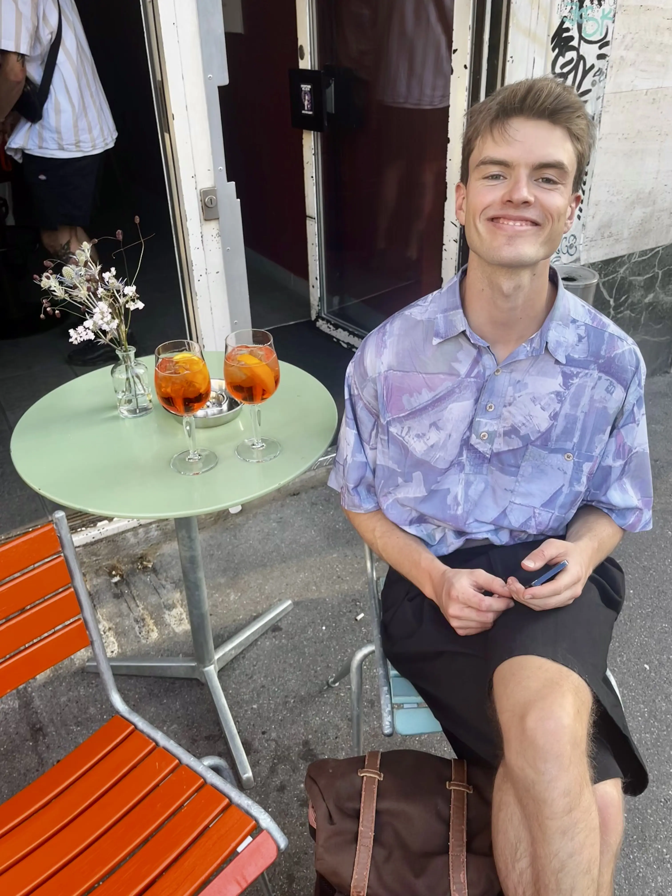
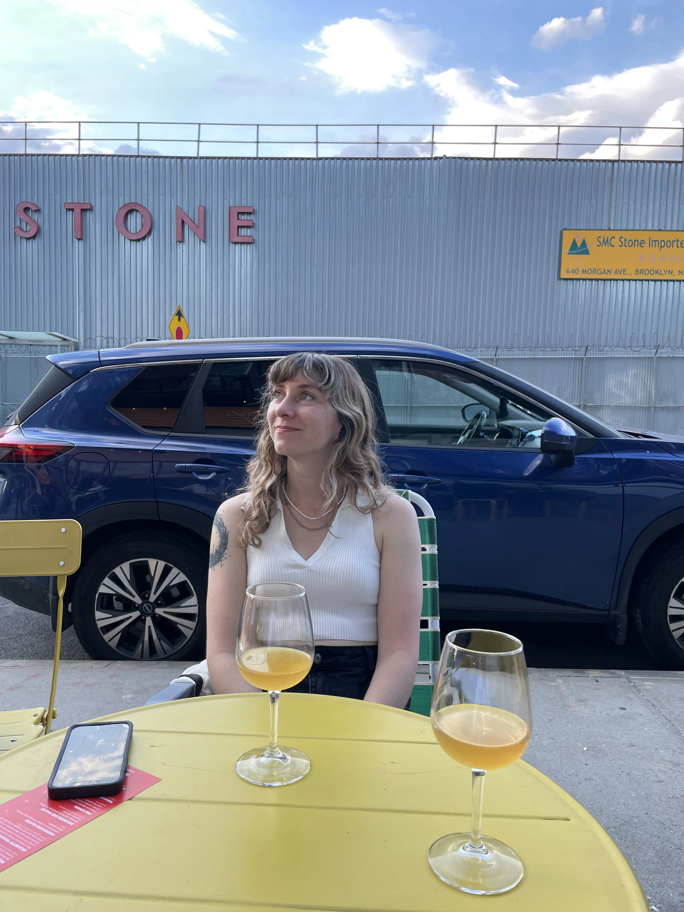
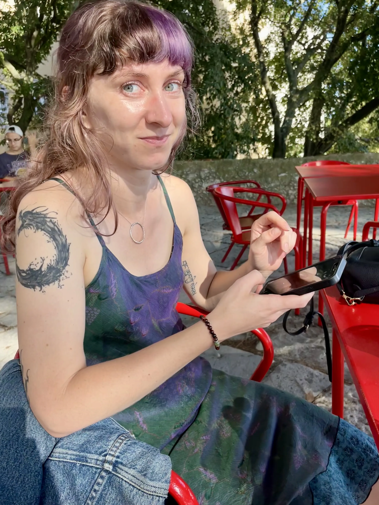
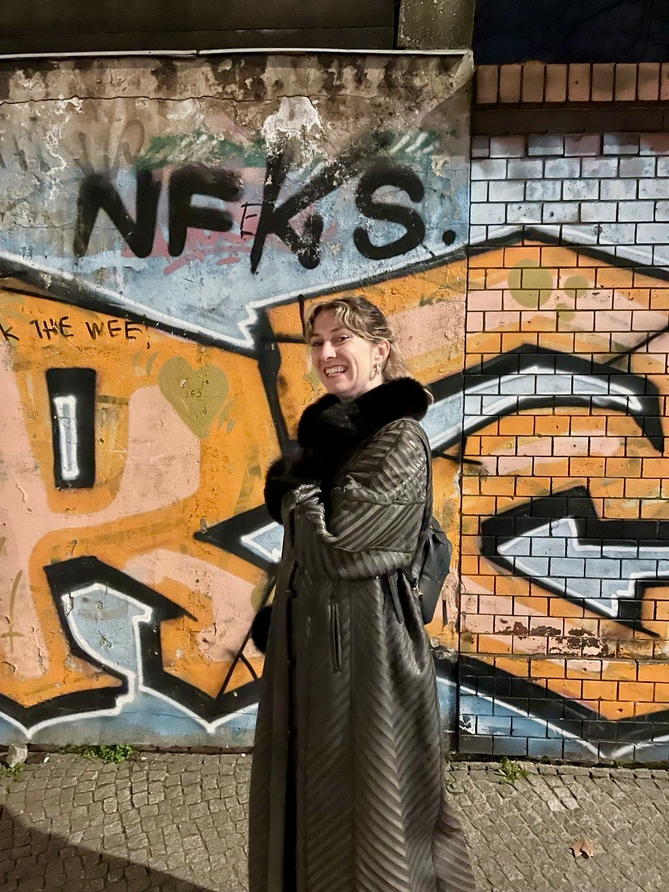
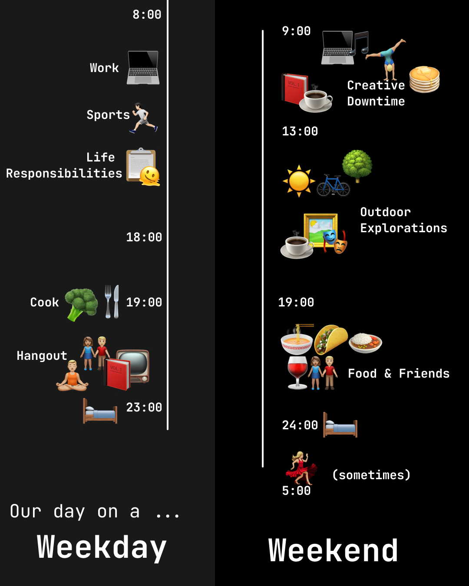

Summer / Moritz
Hi! We’re Summer and Moritz, a couple looking for another couple / person to live with for at least 1 year in or around Marseille starting March 1, 2026.
Moritz (27) is from Germany and has been living and working in Zurich, Switzerland for the last few years as a Software Engineer and UX Designer in a small company. Summer (32) is a trauma-focused psychotherapist who has been living in Brooklyn, New York.
We met in New York in 2023. Since we both work remotely, we’ve been lucky enough to be able to date long distance for the last 2.5 years, going back and forth between Europe and New York and visit each other for months at a time. Now, we are ready to finally be living together in one place and to get to prioritise community, friendships, and a more grounded life.
As part of our next step, we’re searching for one or two people that want to create and share a home together. We are looking for roommates with whom we can build a friendship and share good times, meals, and creativity – but more below.
The space
We would like a house or apartment that is at least 3 bedrooms if not more – 1 for us, 1 for you, and 1 bedroom that is open for guests (your friends or ours) to come visit anytime. Our max budget is 2000 € /month for rent for our share of the apartment.
It’s important we have enough space and privacy for all of us to comfortably work from home as needed, so we appreciate more quiet and calm in the house during standard working hours.
Living together
Outside of working hours, we would love roommates who are interested in cooking or eating together a few nights per week and at least one night per week doing some kind of a shared activity – doing something creative together, listening to music, dancing, going out, watching a movie, playing a game, doing a mindfulness activity / meditation together… no hard rules, but real interest and openness in building community and friendship.
We would especially love some kind of a creative partnership where we can collaborate on shared projects or at least work together in the same space sometimes for inspiration to reflect and bounce ideas off of each other.
While we are looking to build a friendship with you, it’s also important to note that both of us consider ourselves introverts.
Moritz



A description of Moritz (by Summer): Moritz is a softie who loves moving slowly, time to process his thoughts and feelings and make sense of the deeper meaning of his experiences. Moritz is very connection-driven and harmony-oriented, but he is also still very much an introvert who recharges with time alone or around people he can move slowly and be soft around. Moritz has an excellent eye for details and design and thinks visually – if he’s working through a complex idea, you’ll find him jotting down notes, diagrams, and designs so he can visually process what he’s thinking through.
Summer



A description of Summer (by Moritz): Summer is a passionate, caring, and very empathetic person. If not immersed in books on magical realism and fantasy, her mind is always on the search for new insights into human behaviour. She hates logistics and is impressively skilled at minimising the time she has to spend on activities she sees no value in. She’s diligent about work and workouts, and likes to balance it out through moving slow on weekends. She’s very aware of her own feelings and needs and good at setting boundaries, along with taking care of the strength and health of her relationships. She’s already lived many lives and with it comes a very open mind to different people, cultures, and relationships.
Our day overview

Next steps
Based on these descriptions, if you feel like we could be a good fit for you (and your partner) in terms of friendship chemistry, please send back the following:
- Your budget and any preferences regarding the house/apartment
- Your ideal vision for how you would like to share the space with us
- A short description of you and some of the things you love most
We are excited to get to know you and will reach out and schedule a video call as a first step in exploring living together!
Note: The two of us also come with, Haruki, Summer’s cat. Haruki is ultimately very lovable if you respect his special needs, but he is a little neurotic.
Contact
You can reach us by email at nicepeopleflat@gmail.com
or on Instagram: instagram.com/nicepeopleflat